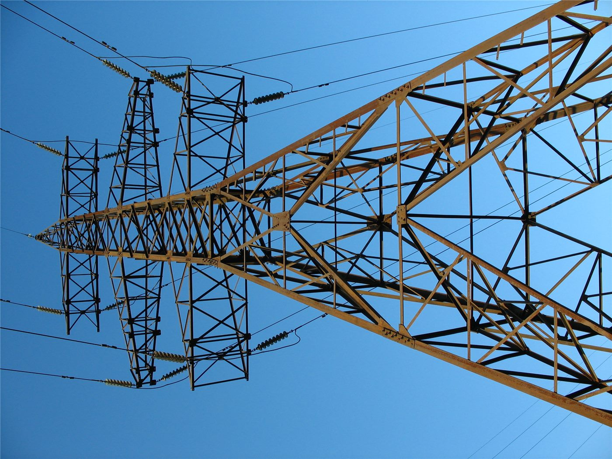

대만 해상풍력 발전기 첫 화재… 해상 구조물 소방 대응이라는 새 과제
대만 해역의 해상 풍력 발전기에서 처음으로 화재가 발생했다. 육지에서 멀고 접근 수단이 제한된 해상 구조물의 화재 진압이 새로운 안전 과제로 떠올랐다. 감독·조사 체계 전반을 점검해야 한다는 지적이 나온다.
손승종 기자 · 2026.08.25
橋대만

대만 해역에 설치된 해상 풍력 발전기에서 화재가 발생했다. 대만에서 해상 풍력 설비 화재가 확인된 것은 처음이다. 발전기 나셀 부위에서 불이 난 것으로 알려졌으며, 인명 피해 여부와 정확한 발화 원인은 조사가 진행 중이다.
광고 문의 · 300×250바다 위 화재라는 조건
해상 구조물 화재는 육상과 조건이 다르다. 접근에 선박이나 헬기가 필요하고, 기상 조건이 나쁘면 접근 자체가 지연된다. 타워 상부의 나셀은 지상 100미터 이상 높이에 있어 외부에서 물을 뿌리는 방식의 진압이 사실상 어렵다.
이 때문에 해상 풍력 업계는 초기 진압을 자동 소화 설비에 의존한다. 화재가 자동 설비의 대응 범위를 넘어서면 통상 연소가 끝날 때까지 기다리는 선택이 이뤄지며, 이 경우 블레이드 파편이 해상에 떨어지는 2차 문제가 뒤따른다.
확대되는 설비, 따라가야 할 규제
대만은 해상 풍력을 에너지 전환의 축으로 삼아 단지를 빠르게 확대해 왔다. 설비 수가 늘어나면 통계적으로 사고 발생 건수도 늘어나는 만큼, 사후 조사 체계와 정기 점검 기준을 다시 점검해야 한다는 지적이 나온다.
언론에서는 이번 사고를 '새로운 공공 안전 위기'로 규정하며, 감독 기관의 조사 권한과 재해 대응 역량을 총점검해야 한다는 논평이 이어졌다.
해상 풍력 설비는 통상 보험으로 손해를 처리하지만, 반복될 경우 보험료 인상이 사업성에 영향을 준다. 이 대목이 발주와 금융 조건에 어떻게 반영되는지가 다음 관찰 지점이다.
출처·참고 (사실 확인용 — 본문은 직접 재작성)
· 聯合報 (2026.08.22)
· 聯合報 (2026.08.22)